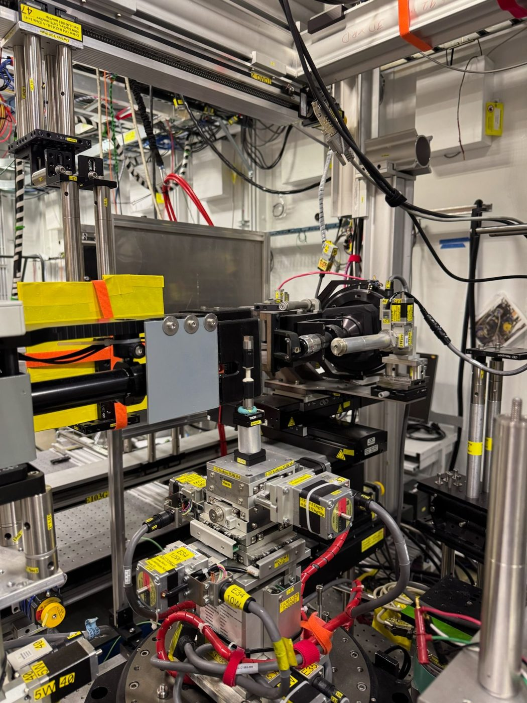
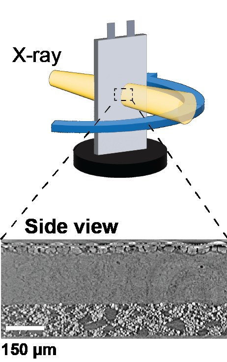
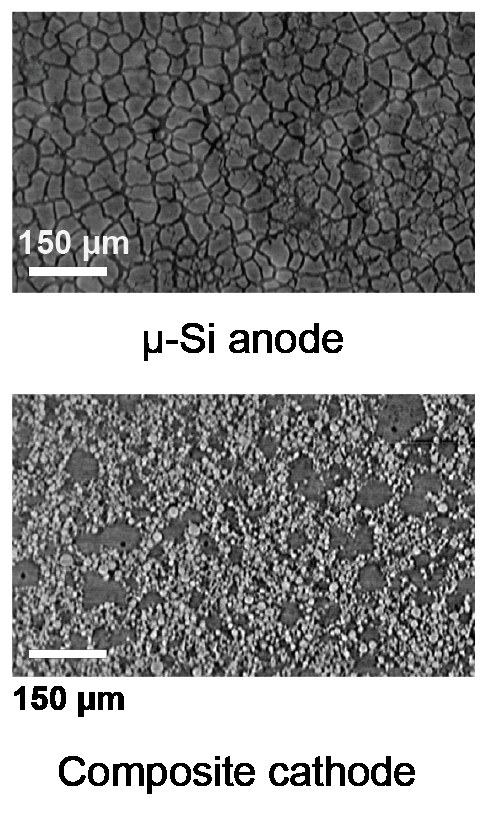
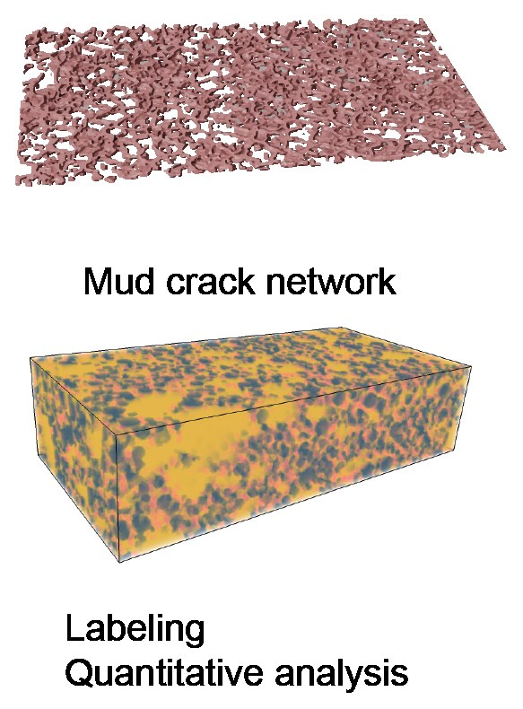

Our work integrates materials synthesis, electrochemical engineering, and synchrotron-based characterization. The two battery chemistries below set the questions we ask; the two characterization techniques are how we answer them.

Solid-state batteries trade the liquid electrolyte for a solid one, gaining safety and a path to higher energy density, but inheriting a new problem: the solid–solid interface. Most ASSB performance limits live there. We work on resolving them.
What we focus on
- Solid-electrolyte interface engineering: improving contact and reducing impedance between the electrolyte and electrode.
- Sulfide-based solid electrolytes: high ionic conductivity, and the stability problem when paired with Li metal.
- Composite cathode design: three-phase optimization across active material, electrolyte, and conductive additive.
- Operando interface characterization: watching the interface evolve during cycling rather than guessing from post-mortems.

Anode-free architectures remove the anode active material entirely: Li metal is plated in situ on the current collector during the first charge. The upside is energy density. The downside is that everything depends on plating uniformly and stripping reversibly. We design cells and electrolytes to make that work, then watch what's actually happening.
What we focus on
- Cell & current-collector design: surfaces and electrolytes that promote uniform Li deposition and reversible stripping.
- Failure-mode isolation: symmetric and asymmetric cell geometries (Li‖Li, Li‖Cu, full cells) to separate cathode-side losses from anode-side dead lithium and SEI growth.
- 3D imaging of plating morphology: synchrotron tomography of the deposited Li layer through cycling.
- Cross-talk effects: how electrolyte decomposition products transported across the cell change the failure picture.

Real-time observation of a working cell. We design the cells, run the experiments at synchrotron beamlines, and pair spectroscopy with electrochemistry so the chemistry and the curve are read together.
Techniques we use
- X-ray absorption spectroscopy (XAS): element-specific oxidation states and local structure during cycling.
- X-ray diffraction (XRD): crystallographic phase changes and lattice strain in real time.
- Electrochemical impedance spectroscopy (EIS): frequency-domain separation of interfacial and transport processes.
Non-destructive 3D imaging of the inside of a working cell. We've built the capability up to pouch-cell scale: from sample mounting and beamline acquisition through reconstruction, segmentation, and quantitative morphology analysis.




At the beamline
The in-situ cell holder sits on the rotation stage. As the cell turns through the X-ray beam, the detector records a projection at every angle.
See through the whole pouch cell
The projections are reconstructed into a 3D volume, so any virtual slice can be read out without opening the cell. Here, a side view through the full all-solid-state stack.
Read each layer from above
Top-view slices resolve the mud-crack pattern of the µ-Si anode and the particle distribution of the composite cathode across hundreds of micrometres.
From image to number
Segmentation turns grayscale into labelled phases (the anode crack network and the phases of the composite cathode) for quantitative 3D analysis. Read the paper
Assembled vs. cycled
A µ-Si anode imaged as assembled and after cycling. Drag the divider to compare.


What we resolve
- Lithium-metal morphology: dendritic vs. compact deposits, quantified across cycles.
- Crack and pore networks: in solid electrolytes and composite cathodes.
- Particle-level damage: fracture and contact loss in cycled active materials.
- Pouch-cell scale tomography: capability extended from coin-cell samples to pouch geometry, where commercial relevance lives.